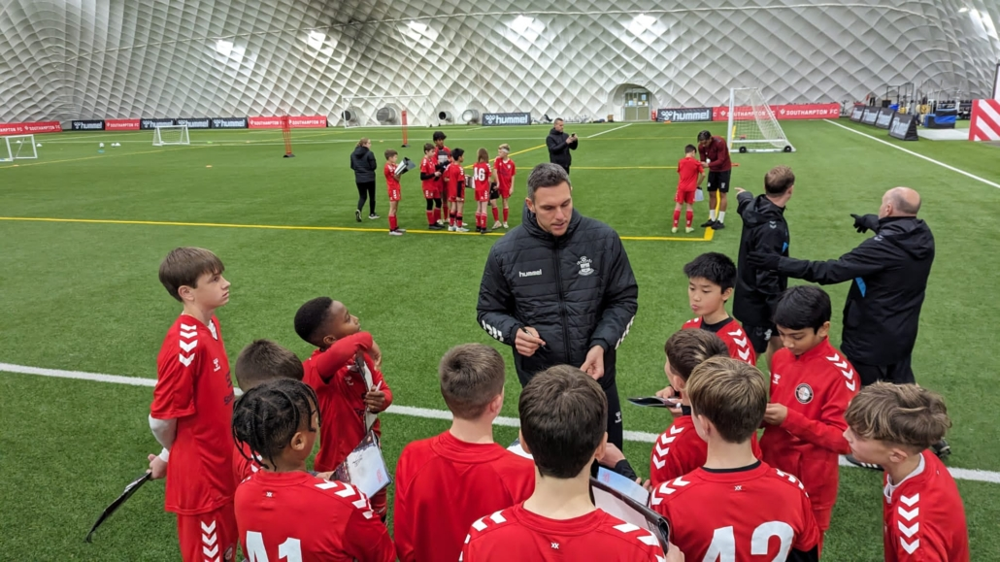

Experienced. Professional. Premier League standards.
Ellie grew up playing in the Liverpool and Manchester youth circuits and earned a place in the Liverpool Women’s Academy at age 14. Known for her creativity and sharp decision-making, she captained the U18 squad and trained several times with the senior team.
After a knee injury ended her chances of going fully pro, Ellie turned to coaching — a decision that shaped her life. She spent four years as a technical development coach within the Everton Women’s Academy pathway, helping young midfielders learn how to control the tempo of a match.
Ellie believes in teaching players to be brave on the ball: taking risks, scanning early, and creating space with smart movement. Her sessions are fast-paced, demanding, and full of encouragement.
Marcus started his journey at Manchester United’s Academy, where he played as a centre-back from U9 to U16. Although he didn’t make the senior team, he learned defending from some of the top youth coaches in England.
He later signed with a Championship club and played several years in the English Football League. Throughout his time as a player, Marcus was known for his leadership, aerial strength, and ability to organise the back line.
After retiring, he worked three seasons as a youth development coach at Wolverhampton Wanderers, helping develop young defenders into confident, disciplined players.
Known simply as “G,” he spent his early career in the Brighton & Hove Albion Goalkeeping Academy, where he trained under some of the most respected goalkeeper coaches in the Prem.
Injuries prevented him from pushing into the first team, but his talent for analysing movement, reading strikers’ body language, and improving a keeper’s reaction speed led him naturally into coaching.
G has helped develop keepers who went on to join U18 and U21 squads at various professional clubs. His sessions are demanding but empowering — focused on confidence, bravery, and modern distribution using both feet.
Every coach at Elite England Soccer Academy carries experience from real Premier League academy environments. They understand the standards, the expectations, and the daily habits required to grow as a player.
Together, they create a training culture built on:
When players train here, they don’t just learn football — they learn discipline, responsibility, and confidence that carries far beyond the pitch.